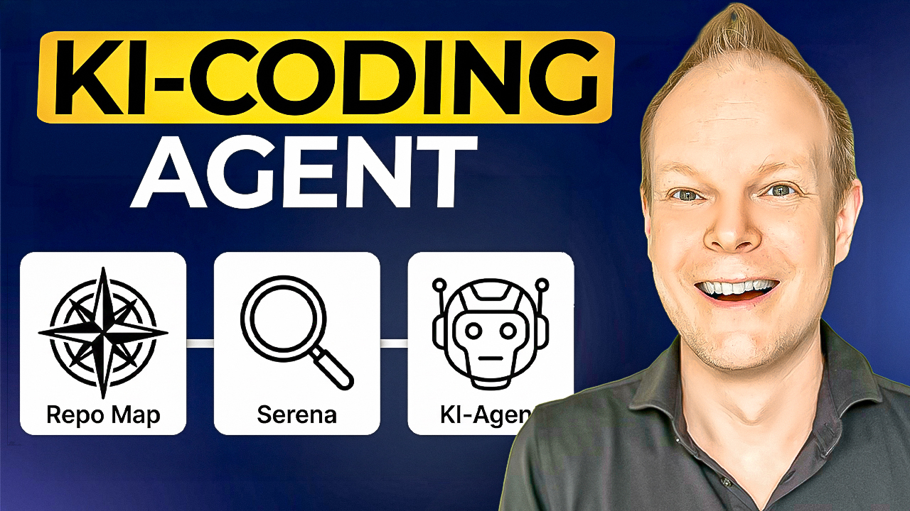

Praxis-Tutorial · Repo Map und Serena in Pi
Große Codebasen für KI-Agenten erschließen
Vom begrenzten Überblick zur gezielten Symbolfrage – reproduzierbar, read-only und in deinem eigenen Repository.
Das erreichst du
Du baust ein Setup, mit dem ein KI-Agent zuerst relevante Bereiche einer Codebase findet und danach nur benötigte Details abruft – ohne das gesamte Repository in das Context Window zu laden. Eine konkrete read-only Übung zeigt dir im eigenen Repository, ob dieser Zugriff wirklich funktioniert.
Wähle deinen Einstieg
Neu hier
Beginne beim mentalen Modell. Danach führst du Installation und Transfer in einer sicheren Reihenfolge aus.
Geführt mit Kapitel 01 starten →Erfahren oder vom Video hier
Springe direkt zum Installations-Runbook oder nutze die fokussierten Referenzen als Nachschlagewerk.

Begleitvideo: KI-Agenten in großen Codebasen
Das Video zeigt den Workflow live an Spring PetClinic – Repo Map, Serena und gezielte Symbolfragen in rund 17 Minuten.
Auf YouTube ansehen →Warum dieser Ansatz?
Ein großes Context Window allein sagt einem Agenten noch nicht, welcher Teil einer Codebase für deine Aufgabe wichtig ist. Eine vollständige Übergabe des Repositories erzeugt viel Kontext, aber noch keine gute Suchstrategie.
Die Architektur ist allgemein: globale Vorauswahl, danach sprachspezifische Code-Intelligence. Praktisch validiert wurde dieses Tutorial mit Java und JDTLS. Andere Sprachpfade werden hier nicht als getestet ausgegeben.
Die vier Kapitel
Warum Repo Map und Serena zusammengehören
Das Problem großer Codebasen und die beiden Schlüsselkonzepte ohne Vorwissen verstehen.
Repo Map in Pi einrichten
Pi, Aider und die Repo-Map-Extension installieren und die Kontextkosten korrekt einordnen.
Serena in Pi einrichten
Den validierten Java-/JDTLS-Pfad indexieren, Serena anbinden und semantische Navigation aktivieren.
Read-only ins eigene Repository übertragen
Eine reale Frage untersuchen, Evidenz dokumentieren, Git-Zustand vergleichen und Fehler eingrenzen.
Setup von null bis funktionsfähig
Die Kapitel enthalten alle Befehle, Konfigurationen, erwarteten Ergebnisse und Prüfschritte. Du musst keine interne Projektdatei öffnen. Arbeite als Neueinsteiger in der Reihenfolge 01 → 04 und beginne möglichst mit einem bekannten Git-Stand.
Fokussierte Referenzen
Diese fünf Seiten sind für den Direkteinstieg und zum späteren Nachschlagen gedacht.
Wichtige Grenze
Eine gute Repo Map und korrekte Serena-Treffer belegen, dass die Kontext-Pipeline funktioniert. Sie beweisen weder Vollständigkeit noch Laufzeitverhalten. Dieses Tutorial bleibt deshalb bewusst bei read-only Orientierung und Gegenprüfung.
Frag nach
- Markiere eine relevante Stelle und notiere deine Frage, deinen Einwand oder deinen Praxisfall als Kommentar.
- Öffne deinen eigenen KI-Agenten und gib ihm diese Seite als Kontext: Lass ihn die HTML-Datei lesen oder füge den Seiteninhalt in den Chat ein.
- Klicke oben rechts auf „Kopieren“. Dadurch landet die markierte Textstelle samt Kommentar als JSON in der Zwischenablage.
- Füge dieses JSON in den Chat deines KI-Agenten ein.
- Jetzt könnt ihr gezielt an deiner markierten Frage weiterarbeiten.